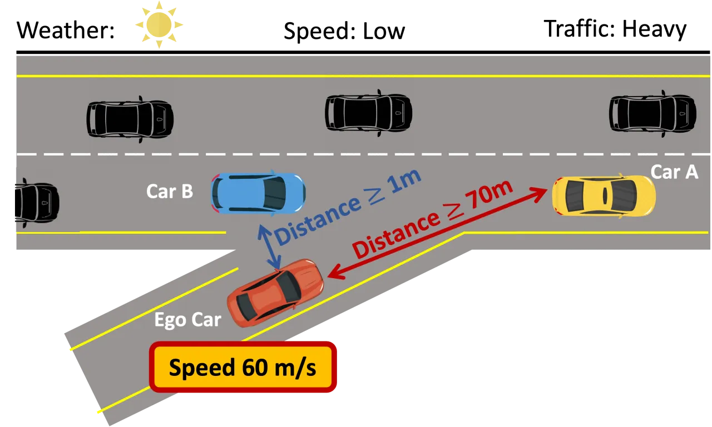
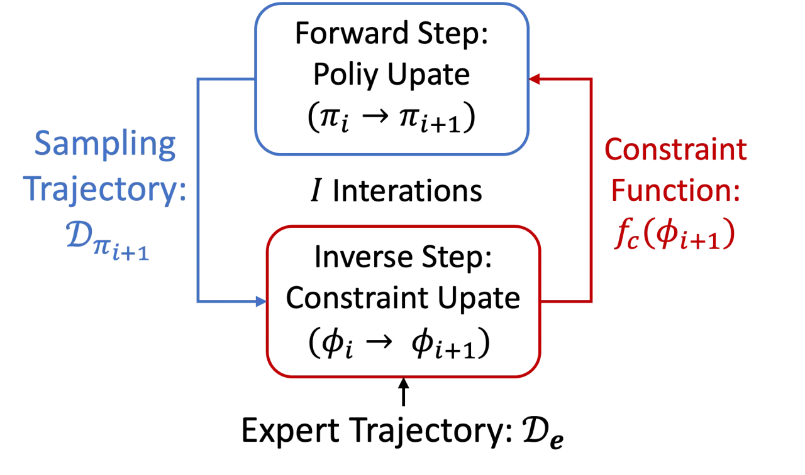
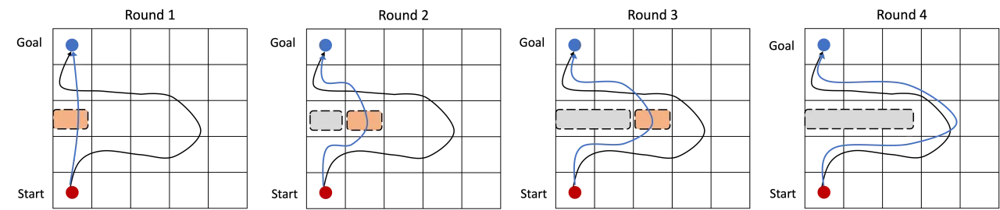
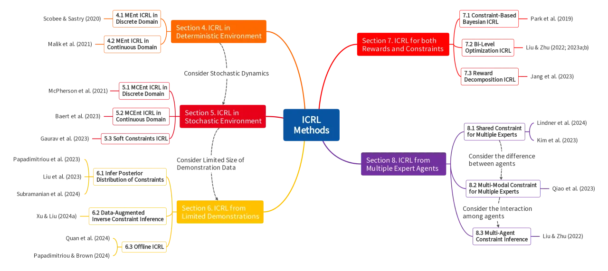
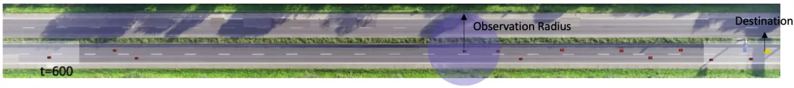

Inverse Constrained Reinforcement Learning (ICRL) 的目标是：仅凭专家的示范数据，反推出专家所隐式遵守、却难以被显式写出的约束。本综述统一给出问题定义与「策略更新 ↔ 约束更新」的交替算法框架，并沿「确定性 → 随机 → 有限示范 → 奖励与约束联合 → 多智能体」逐步推广，梳理代表方法、基准与开放问题。
在 safety-critical 应用中，RL agent 必须知道其应遵守的约束。但真实任务里约束往往「未知、难以用数学显式刻画」——它们常常是 time-varying、context-dependent，并且深植于专家自身的经验之中。手写 reward 或 cost 很容易挂一漏万；相比之下，专家的示范数据里已经隐含地体现了这些约束。
ICRL is the task of inferring the implicit constraints that expert agents adhere to, based on their demonstration data.

ICRL 属于「从示范学习」的谱系（apprenticeship learning）。但它不走 behavior cloning 的直接监督映射（对预测误差敏感、难以迁移到不同 dynamics），而是采用 preference modeling 思路：agent 需先恢复出专家优化的 reward 与遵守的 constraint，再在这些约束下优化 CRL 目标来模仿专家。核心难点在于 identifiability——可能存在多组等价的 reward 分布与约束组合，都能解释同一批示范。
几乎所有 ICRL 方法都可归纳为一个 bi-level（双层）交替迭代：Forward Step 在当前约束下更新策略以模仿专家，Inverse Step 则比较「专家轨迹」与「当前策略采样轨迹」的差异来更新约束函数。二者反复迭代，直到模仿策略无法再区别于专家。


综述以「问题设定的难度」为主轴组织全文：从最简单的 deterministic dynamics 出发，依次引入 stochastic dynamics、有限示范、reward 与 constraint 需同时推断、以及 multiple experts / multi-agent 等更贴近现实的复杂度。

确定性环境下用 Maximum Entropy (MEnt) 目标即可；一旦 dynamics 变随机，需转向 Maximum Causal Entropy (MCEnt) 以正确处理因果信息流，并区分 hard / soft 约束。
示范稀少时可对约束建 posterior distribution、做 data augmentation 或走 offline 路线；多专家时则要区分 shared constraint、multi-modal 约束混合，乃至 multi-agent 交互下的约束推断。
综述系统整理了 ICRL 的评测环境，覆盖三个层级：discrete（grid-world 类）、virtual（MuJoCo 连续控制：Half-cheetah、Ant、Inverted Pendulum、Walker、Swimmer 等，人为注入不同类型约束）、以及 realistic（真实驾驶数据构建的 HighD 高速公路环境）。
| 评测层级 | 代表环境 | 约束特点 |
|---|---|---|
| Discrete | Grid-World | 已知/可枚举，便于验证 identifiability |
| Virtual | MuJoCo (Half-cheetah / Ant / Walker …) | 连续控制，注入位置/速度等约束 |
| Realistic | HighD Driving | 真实车流轨迹，context-sensitive 约束 |

现有多智能体方法（如 Liu & Zhu, 2022）多假设合作场景、且各 agent 约束互不冲突。但真实场景（如拥堵路况下的竞争性驾驶）中一车的动作会显著影响他车能否满足其车距约束。如何构建博弈论模型刻画竞争行为、并求解策略间的均衡，是重要方向；将 general-sum games 的 RL 求解器扩展到逆向约束推断仍是实质性挑战。
传统 ICRL 多为 online 交互，但在机器人、医疗、自动驾驶等场景 online 交互代价高或有风险。Quan et al. (2024) 提出了学习 hard constraint 的 offline ICRL，但 soft constraint 仍未解决；且实验表明性能不稳定，对超参、距离度量 𝒟_f 以及离线数据集中 expert / 违约 / 次优轨迹的比例都高度敏感。
部署环境的 dynamics 会受噪声与不可预测的不确定性干扰（天气、温度、地方驾驶习惯等）。Xu & Liu (2024b) 用 robust optimization 框架处理，但只覆盖 transition function 的失配，未考虑 reward 失配与 occupancy measure 变化。将 robust RL / inverse RL 框架推广到 ICRL、并让学到的约束泛化到真实控制，仍待解决。
IRL 已有较多理论（identifiability 条件、feasible reward set、样本复杂度的 minimax 下界等）。但 ICRL 的最优性与约束性质（hard / soft / probabilistic）及所选约束优化方法（Lagrange、Interior Point）耦合，定义精确的 identifiability 条件与 feasible constraint set 相当困难。Yue et al. (2024) 已给出 feasible constraint set 定义，但仅限简化的离散环境。
Sora、Veo 等生成式视频模型虽表现惊艳，却常违背基本物理规律；在仿真中学到的技能若缺乏物理真实性，难以迁移到现实。一个方向是把真实世界视频当作 expert demonstrations、用约束来表示物理规律与常识规则，并从视频中可靠地推断它们——如何设计合适的约束表示与推断方法是重大挑战。